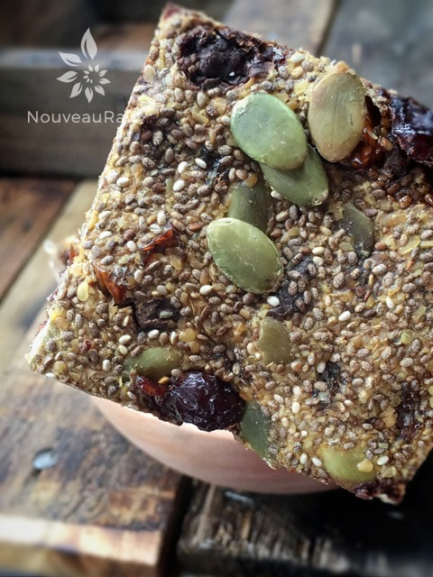

Sweet Chia Cracker

~ raw, vegan, gluten-free, nut-free ~
These Sweet Chia Crackers are slightly crunchy with a bit of a chew to them. They aren’t overly sweet and they are a cracker that can on its own. Simply meaning that they don’t need a spread or dip on them. They are wonderful as is.
The base of this cracker is chia seeds which have a mountain load of nutrients. I have a small write-up on chia seeds but to gather more information on them, Google is your friend. Click here.
I have made this recipe many times over and each time I end up using a different liquid. Date water, pineapple juice, orange juice… I don’t remember them all. Oh, and coconut water. They all tasted wonderful and gave the cracker a different taste.
I hope you enjoy this recipe. Many blessings, amie sue
Ingredients:
- 1 cup chia seeds
- 3 cups date water, (see below) could use any fruit juice
- 1 tsp Ceylon cinnamon
- 1/4 tsp Himalayan pink salt
- 1 cup dried raisin melody
- 1/2 – 1 cup raw pumpkin seeds, soaked
- 1/2 cup chocolate chips
- 1/2 cup ground flax seeds
Preparation:
- Soak chia seeds in water or fruit juice for 1 hour in a medium-sized bowl. Be prepared for the chia to really swell up!
- Date water – I made a jar of date paste, I hate throwing anything out and I had all of this beautiful sweet water, created by the dates. So I used this to soak my chia seeds in.
- I have used orange juice and water with a 1:1 ratio and that was great too.
- You will also need to soak the pumpkin seeds according to the link provided above. Once they are done soaking, drain and discard the soak water… be sure to give them a good rinse.
- If you already have soaked and dehydrated pumpkin seeds, use those and just skip the re-soaking process.
- Add the cinnamon, salt, raisins, pumpkin seeds, and chocolate chips. Stir well.
- Add in ground flax seeds, mix well, and set aside for about 10 minutes. This will cause the mixture to thicken up some more.
- Spread mixture on the non-stick Teflex sheet that comes with your dehydrator.
- Using an off-set spatula, spread mixture to about 1/4″ thick. Square up the edges.
- I needed 2 of my 12 x 12″ Excalibur dehydrator trays.
- Dehydrate for 1 hour at 145 degrees (F), then decrease to 115 degrees (F) and continue to dehydrate for about 10 hours. This cracker will remain chewy.
- Halfway through the drying process (when dry enough), flip the crackers over onto the mesh sheet and peel off the non-stick sheet. This will speed up the drying process.
- Cut into desired shapes and sizes.
- Store in an airtight container and in the fridge.
Culinary Explanations:
- Why do I start the dehydrator at 145 degrees (F)? Click (here) to learn the reason behind this.
- When working with fresh ingredients it is important to taste test as you build a recipe. Learn why (here).
- Don’t own a dehydrator? Learn how to use your oven (here). I do however truly believe that it is a worthwhile investment. Click (here) to learn what I use.

© AmieSue.com